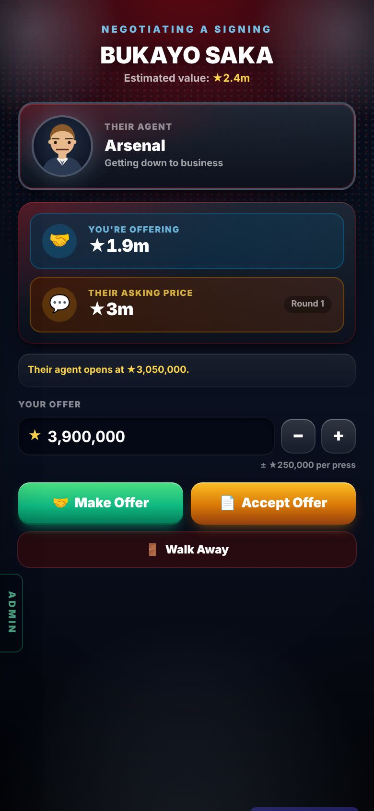
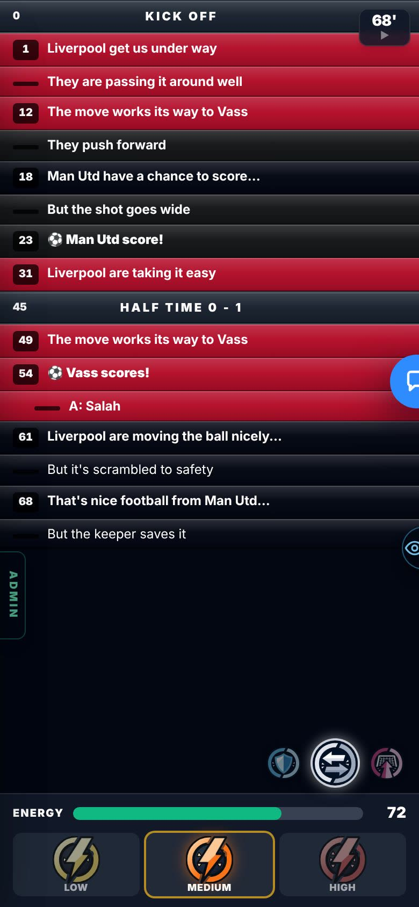
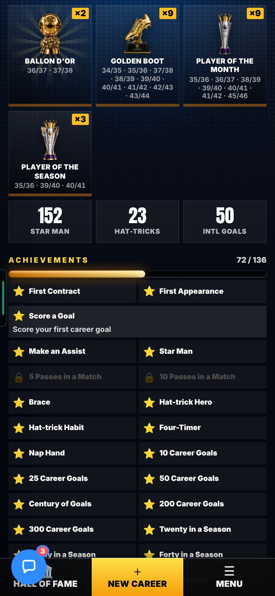
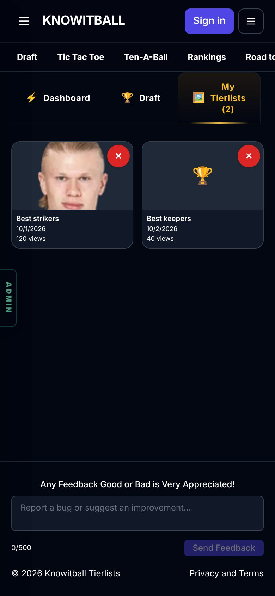
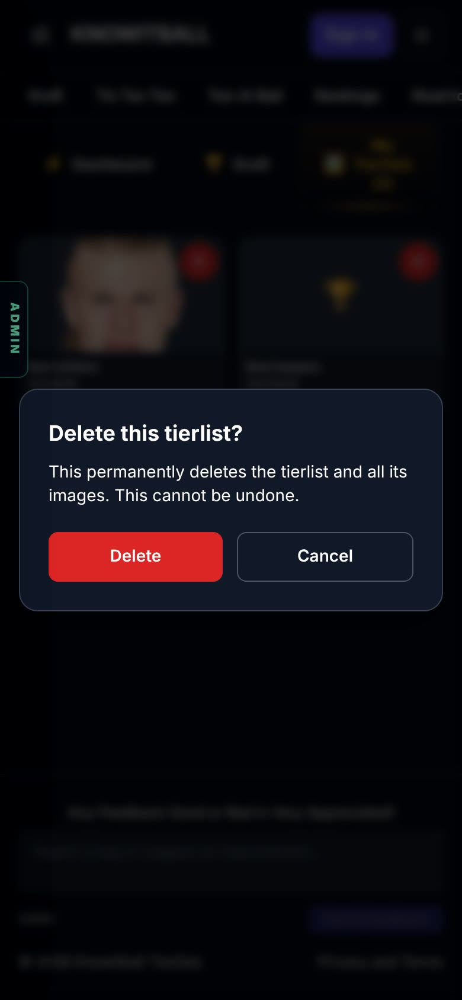
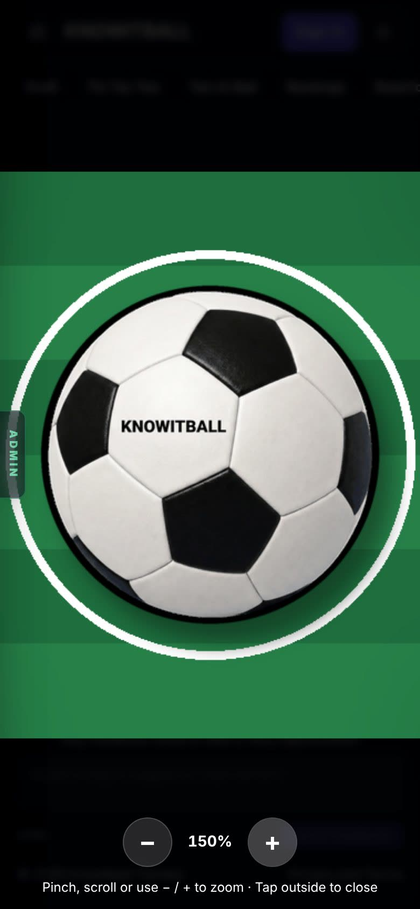
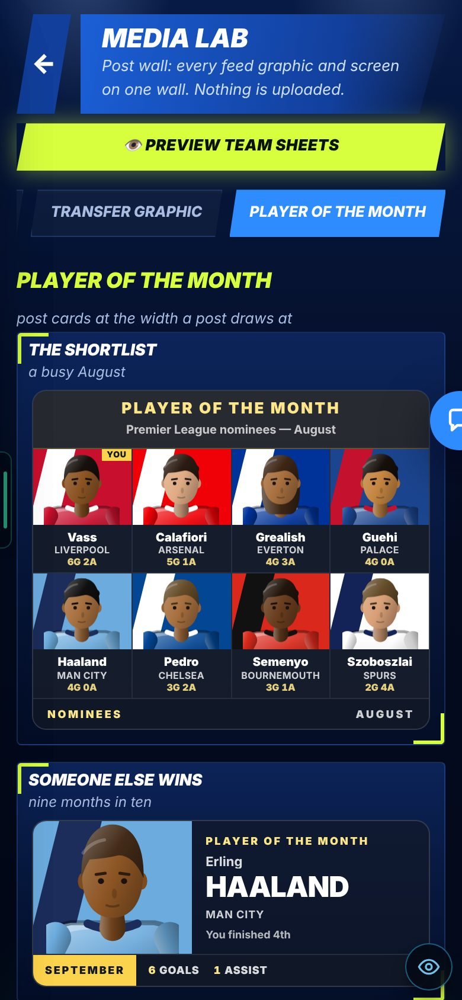
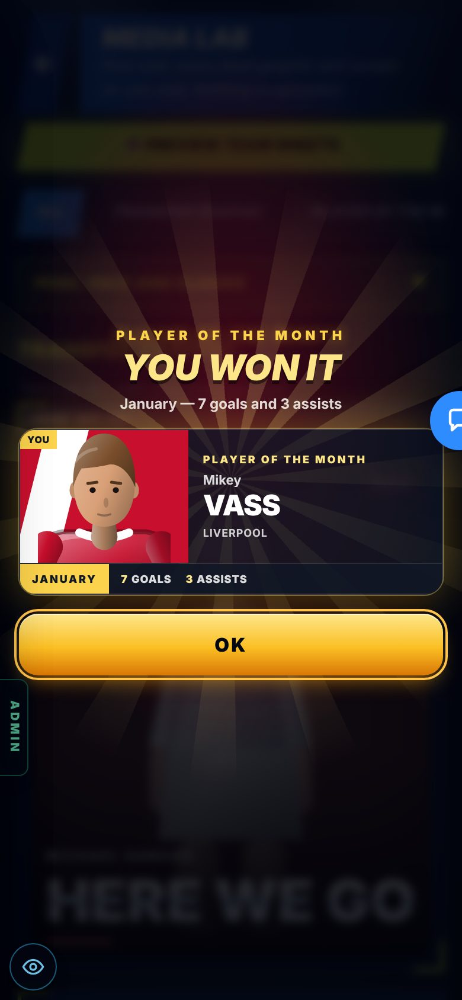

B1 · TOUCH FIXES
Phones get all 27 touch fixes. The 4 old failing tests pass. Wembley is fairer.
On the Harry branch, not live yet.
Overnight round, 20 Oct 2026. In Admin → Patch notes this is v0.66.
CHECK THESE
FIXED
Mouse controls are hard to use by touch. Reasoned from the fix list. The report gives no cause for each fix.
26 were built overnight. The 27th (G5, the in-match buttons) was done on 20 Oct after your OK. Six were seen on a touch phone screen (below). The rest are reasoned from the code.
One tap moves your offer one step. In the test, one tap went from ★1.9m to ★2.15m. Hold the button and slide off it: the repeat stops.



The ✕ is 32 px. A tap opens the confirm box. It does not open the tierlist.


Each image has a ⠿ grip. On a phone: hold an image, then drag.

Two taps on + give 150%. A pinch took the zoom from 100% to 300%.

Fixes nobody has seen yet (reasoned from the code)
- Bigger touch areas: page arrows, grab bar, help button, close and sound buttons, colour inputs, minimap markers, sliders, gallery dots, chips.
- Tap to show names on trophies and on last-5 opponents.
- Click-outside now fires on touch down.
- Create-tierlist ✕ and ✂ show on touch.
- The crop hint says “pinch or use the slider”.
The mute, TOUCH and Power buttons were 26–30 px. Too small for a thumb.
They sit in the match file, on the “may drift” list. The red warning asks before any edit there, so this waited for your OK.
Done on 20 Oct. The mute button is at least 40 px wide. TOUCH and Power are at least 36 px tall. Only size styling changed, no game logic.
A photo link needed a SoFIFA sign-in to show.
The cards loaded the photo from SoFIFA. (Reasoned from the report’s words.)
The cards now draw the head. Seen: 11 drawn heads, 0 broken images.

More pictures (1)

Four checks failed: chanceJudge, keeperPro, keeperBrain and the Wembley test.
The first three broke when the chance drawings were redrawn or deleted on 14–15 Oct, not by code. With the 14 Oct drawings, all three passed with the old numbers.
The drawings’ stored fingerprint was re-recorded. Samples are bigger (keeperPro 80 → 240 seeds, keeperBrain 200 → 600). The limits were not loosened. The Wembley test needed a real game change (below).
CHANGED
The stronger striker’s rising shot crossed at 2.2–2.3 m and hit the bar 17 times in 124 shots. This test never passed in the visible history.
The shot was still rising too high when it reached the bar. (Reasoned from the report’s numbers.)
Shots are aimed lower. Keeper 36 → 70. Valve drop 6 → 10 (no units given). The 80-rated striker now wins 40% of the time. Update (B16, v0.81): Wembley’s keeper is now 66, like the other two 3D games, and the 80 wins 30%.
KNOWN ISSUES
The full suite: 365 passed, 3 failed (chanceMaker, longRangeRules, match2dCam).
All 3 fail the same way on the base before B1. B1 did not cause them and left them untouched.
THE NUMBERS
The numbers, if you want them
Old tests (limits were not loosened). Grey is before. Colour is after.
Wembley, over 124 shots.
VIDEOS
Two clips were planned. Neither was filmed on 20 Oct.
- Wembley, a round of shots: the keeper changed again after B1 (B16, v0.81: 70 → 66). B16’s page has stills of Wembley and a Free Roam clip of the same 3D keepers.
- Negotiation − and +: a tap, a hold and a slide off the button. It needs a summer transfer talk or a club signing. Reaching one in the test copy took over 15 minutes. The still above shows the buttons.
SEEN / NOT SEEN
Seen on a screen
- The six touch fixes above, on a touch phone screen
- Player of the Month cards: 11 drawn heads, 0 broken images
Measured (numbers)
- The 4 old tests: keeper errors, rebound goals and “moves early” (see The numbers)
- Wembley: 17 bar hits in 124 shots before; win share 23% → 40%
- Full suite: 365 passed, 3 failed (the same 3 fail on the base)
Reasoned, not seen
- Bigger touch areas, tap-to-show names, click-outside, create-tierlist ✕ and ✂, the crop hint (list above)
- In-match mute, TOUCH and Power sizes (G5): a class-only change, done 20 Oct, no still
Not seen / not done
- Whether anyone played the new Wembley by hand: not in the report